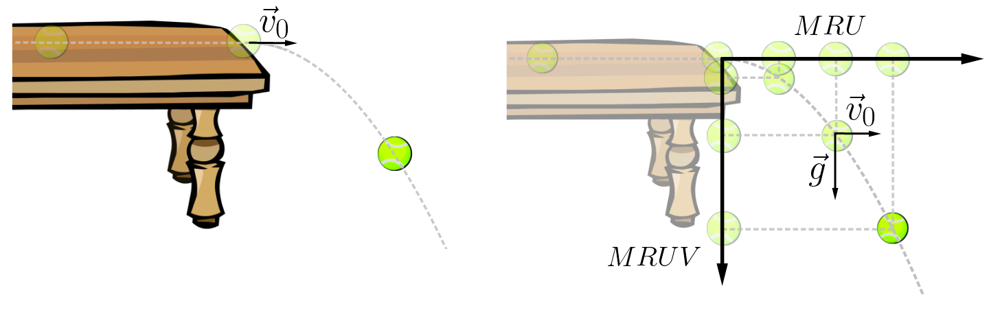
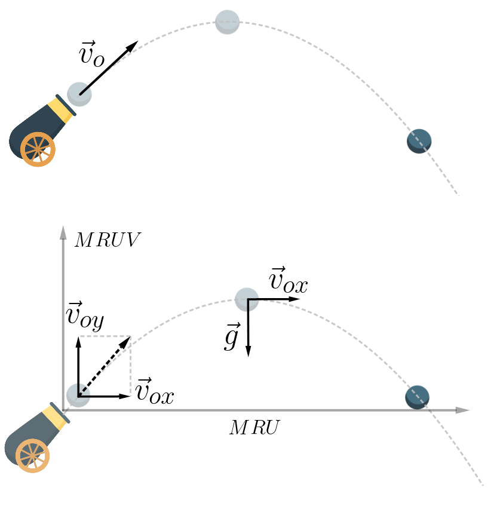

Ocorre o lançamento horizontal quando imprimimos a um corpo uma velocidade inicial de direção horizontal. Normalmente, o corpo é lançado do alto de um ponto elevado. Desprezando-se o atrito com o ar, na direção horizontal ele se move em movimento retilíneo e uniforme (MRU) e, na direção vertical, em movimento retilíneo uniformemente variado (MRUV), pois está sob a ação da gravidade. Para resolver problemas, é conveniente estudar o que ocorre na horizontal separadamente do que ocorre na vertical — o movimento real é a composição desses dois movimentos. O recurso teórico que permite estudá-los separadamente é chamado princípio da independência dos movimentos de Galileu.
Este princípio afirma que um movimento que se desenvolve num plano (XY, por exemplo) pode ser analisado em cada uma de suas duas dimensões, a X e a Y, separadamente, sem qualquer prejuízo de ordem física ou matemática.
Na imagem abaixo, a componente horizontal do movimento é retilínea e uniforme (MRU), ao passo que a componente vertical é retilínea e uniformemente variada (MRUV).

Ocorre o lançamento oblíquo sempre que lançamos um objeto com uma velocidade inclinada em relação ao solo, ou seja, uma velocidade que não é nem vertical nem horizontal. Para estudar o lançamento oblíquo, valemo-nos do princípio da independência dos movimentos simultâneos e analisamos separadamente a cinemática de cada uma das direções.
Para analisar esse tipo de problema, a primeira coisa a fazer é definir um referencial conveniente. Em seguida, decompomos a velocidade inicial em duas componentes, que se projetarão sobre o referencial escolhido.

A partir daí, usamos o princípio da independência dos movimentos simultâneos para completar a análise.
O movimento na vertical é análogo ao do lançamento vertical: trata-se de um movimento uniformemente variado (MRUV); já o movimento na horizontal é retilíneo e uniforme (MRU).